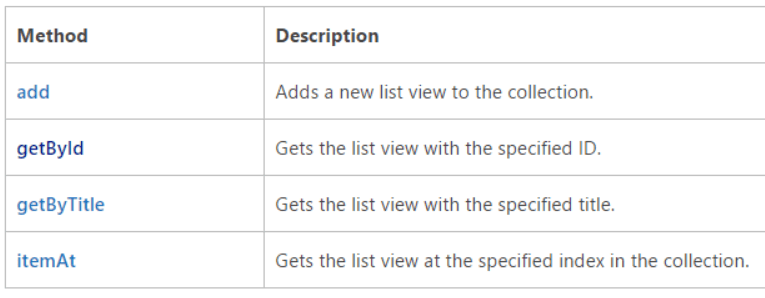

Introduction
If we take a look at SP.View object (sp.js) provided by Microsoft as part of JSOM libraries, we can see all Methods and Properties available like update, defaultView, title, …
But, if we are looking for a way to get one of all available views inside a List/Library, we should look at SP.ViewCollection object.

Multilingual project and getByTitle
Bad news here because working in a multilingual project, we should avoid getByTitle and working in a generic method that we need to apply to several lists in several webs we have a variable GUID.
So, in this scenario, the best option should be getByURL, because View URL (like mod-view.aspx or AllItems.aspx) in most cases is constant between lists, webs and site collections.
Until now (September 2015) we haven’t getByUrl method available in SharePoint JSOM framework.
Solution
I’d like to share a way to implement this method iterating through all views:
1 | function getViewByUrl(listGuid, viewUrl) |
Tip: If you want to test this code in a SharePoint environment you can copy and paste the code directly in the Console of your browser and see what is the output.